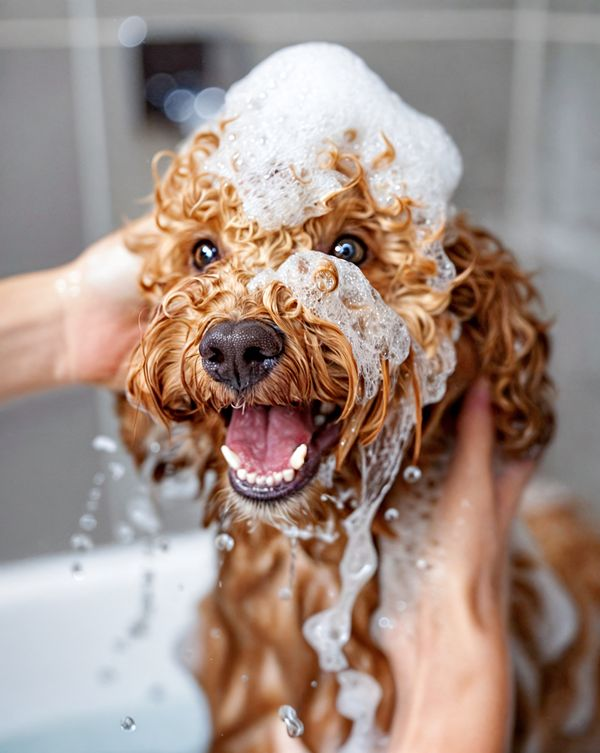

A mini sPAWday
Bath & Brush
A thorough bath, dry, and brush-out to refresh the coat and skin. A good fit between haircuts and for short-coated pets.
Typically includes
- Bath and shampoo
- Drying
- Brush-out
- Nail trim
- Ear cleaning
Starting at $ [to confirm]